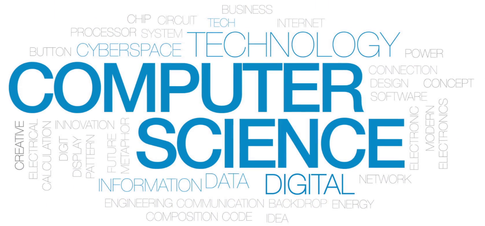

Computer Science: the field of computer technology and innovation that appeals to those with strong STEM skills and a passion
for computers.
Similarly, it also the field of study where women only make up about 18% of Computer Science bachelor’s degrees in the United States according
to the Bureau of Labor Statistics. Initially, as a Hispanic female in a male dominated field I had several stereotypes to overcome that are
typically correlated with minorities that generally brought down my confidence level when comparing myself to my peers. I learned early in my
schooling in Computer Science that women were typically viewed as less superior and when there is a female that is as smart as than their male
classmates, they are viewed as rare and especially gifted. I personally experienced this in several team projects in my more technical programming
classes when I was tasked with doing the “lightwork” such as the report because my teammates did not think I could handle more technical tasks.
Being on a team where your teammates don’t have the confidence in you essentially drove my confidence in myself to the ground.
As I experienced this more in my early years of college, I learned to overcome this judgment by volunteering to do more technical parts before
assignments were given so I could show that I am able to handle what was tasked.

To add to this, I am also several years young for my class because I graduated high school early and started college when I was sixteen years
old which did not add confidence to my overall feeling. Visibly being the youngest in a class often gave off the impression that I have a lack
experience and thus knowledge among my peers. I picked up on this quickly and rather than dwelling on it, I used it to my advantage in which my youth
made me more willing to learn whatever was needed to be successful.
Furthermore, by working through my classes mostly in teams or groups among my classmates, I was able to change this negative feeling
into positive traits that I continue to use today. For example, by being assigned as a team lead, I discovered that I needed to speak up and
voice my knowledge and opinions because it was just as valuable as those around me. This helped shape me into a more determined and persistent
person as I had to push out of my comfort zone to speak out. In correlation to this, I also became more hard working throughout my education to
stay competitive with those around me who already had the confidence working in a Computer Science environment. These are just several examples of
the personal skills I obtained throughout my degree that I will continue to use in whatever I do in life and in my career.
Additionally, I am naturally a detail-oriented and results driven person therefore, I feel that Computer Science is a field where I can put
these skills to good use. With that being said, these skills that I have achieved over the years and throughout my degree have only helped fuel my
passion of Computer Science and have only excelled me to push forward even more to acquire a career in this field. I am truly inspired by technology,
more specifically the potential that technology has to affect the people around them by expressing the ideas and concepts of those who created it.
By continually innovating this technology, there will always be new impacts in society. This is something that I would definitely like to be a part
of and it continually inspires me to work hard to achieve that goal.
Personally, I value the results obtained of a situation and equally importantly, the process it took to get there. There was a long
process of learning Computer Science and who I was as a person as well as who I want to be in the future. With this path I created so far with
my studies, attaining a Bachelor of Innovation of Computer Science degree is something that will propel me forward to earning a career in
Computer Science which will fuel this inspiration to help me achieve bigger and better accomplishments in Computer Science.